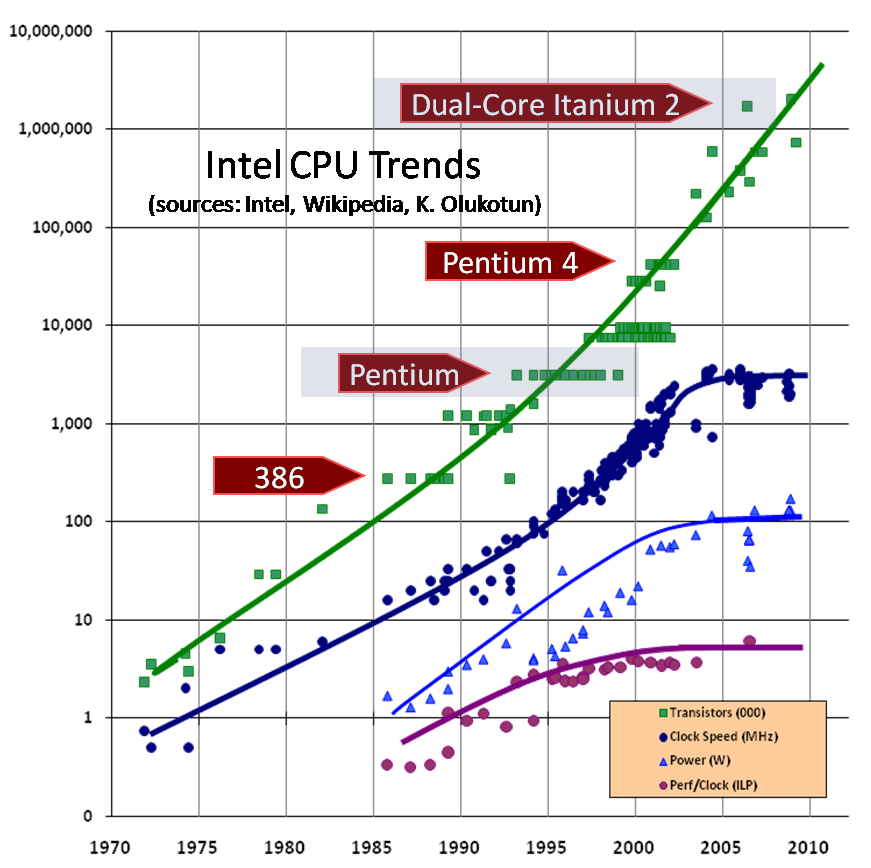
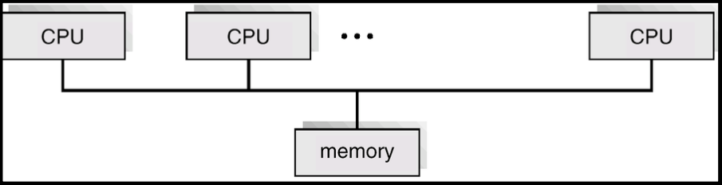
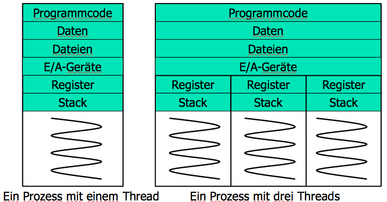
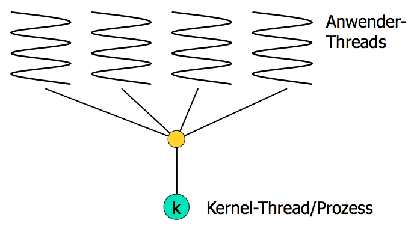
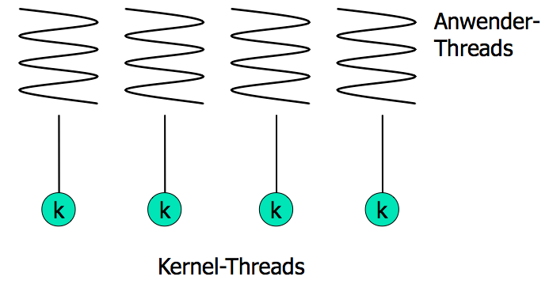
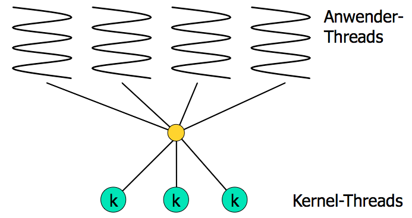

Parallelprogrammierung – Einstieg
Programmierparadigmen
Ziele
- Kennenlernen der Grundbegriffe der Parallelprogrammierung
- Unterscheiden lernen zwischen Nebenläufigkeit und Parallelität
- Überblick gewinnen über Formen der Unterstützung von Parallelprogrammierung durch Hardware und Software
Warum Parallelprogrammierung?
Technische Gründe
- Erhöhung der Rechenleistung durch Erhöhung der Taktfrequenzen stösst technisch an Grenzen.
- Mooresche Gesetz gilt aber noch.
- Folge: Prozessoren mit mehreren Kernen.
- Leistungssteigerung durch Parallelarbeit
- Geschwindigkeitssteigerung bei \(n\) Kernen theoretisch n-fach
- praktisch nicht erreichbar
- Anwendungsentwicklung auf Parallelprogrammierung nicht vorbereitet
Computer im Wandel der Jahrzehnte
- Ein iPhone enthält ca. 1 Milliarde Transistoren.
- Um diese Rechenleistung mit der Technologie der 1950er Jahre zu
bauen, bräuchte es:
- 1 Milliarde Elektronenröhren
- 170 vehicle assembly buildings, um sie unterzubringen
- 1 Terawatt Leistung, um sie zu betreiben
- das entspräche 500 2-Gigawatt-Kernkraftwerken für ca. 50 Milliarden Euro
- das entspräche dem Weltbruttosozialprodukt vor 60 Jahren
- Smartphones realisieren eine Steigerung der Rechenleistung um den Faktor \(10^{22}\) verglichen mit der Technologie vor 60 Jahren.
Welche Fortschritte gibt es in dieser Zeit in der Software?
Geschichte der Rechensysteme
(vgl. [Bengel2015])
- 1970 – Stapelverarbeitung
- Einlesen von Aufträgen (jobs) und Bearbeitung durch die Maschine
- Job-Scheduler bestimmt die Abarbeitungsreihenfolge
- non-blocking IO kommt zum Einsatz (Nebenläufigkeit)
- 1975 – Timesharing-Systeme
- interaktives Arbeiten mittels Kommandozeilen-Befehlen
- Mehrbenutzerbetrieb
- Zuteilung von Zeitscheiben
- 1980 – Personal Computer und Workstation
- hohe Rechenleistung am Arbeitsplatz
- Rückkehr zum Einbenutzerbetrieb
- Kommandozeile + graphische Benutzungsoberflächen
- Insellösungen – kein Zugriff auf gemeinsame Betriebsmittel
- Notlösung: peer-to-peer-Netze
- 1985 – Client-Server-Systeme
- Zentralisierung bestimmter Dienste auf dedizierten Rechnern (server)
- neue Betriebssystemkonzepte für Netzwerknutzung erforderlich
- 1990 – Cluster-Systeme
- auch Verteilte Systeme
- mehrere Rechner bzw. Multiprozessorsysteme teilen sich die Dienstserbringung
- zur Erhöhung von Leistung und Ausfallsicherheit
- Load Balancing Cluster / Serverfarmen
- High Performance Computing (HPC) Cluster
- Geschwindigkeitssteigerung durch Parallelisierung von Aufgaben
- bei Ausfall eines Systems übernimmt ein anderes Cluster-Mitglied dessen Aufgaben
- 1995 – Peer-to-Peer-Systeme
- jede Maschine kann Client und Server sein
- höhere Ausfallsicherheit
- 2005 – Cloud-Systeme oder Cloud-Computing
- Rezentralisierung der Rechenleistung durch Virtualisierung
- Zugriff auf Ressourcen über Internet oder Intranet
Geschichte der Technologie von Prozessoren und Speicherchips
- Mooresches Gesetz von 1965: Verdoppelung der Anzahl der Transistoren auf einem Chip ca. alle 18 Monate – gilt noch heute
- Entwicklung der Mikroprozessoren am Beispiel von Intel
- 1971: Intel 4004, Transistoren: 2300, Taktrate: 108 kHz
- 1999: Pentium III, Transistoren: 9.500.000, Taktrate: bis 1 GHz
- 2000 bis 2008: Pentium 4, Transistoren: 42.000.000, Taktrate: bis 3,8 GHz
- Speicherkapazität pro Chip
- 1970: 1 Kilobit
- heute: 1 Gigabit
- Preisverfall bei MIPS und Kosten pro Bit
- Enwicklung der Mikroprozessortechnik

Worüber reden wir?
Nebenläufigkeit versus Parallelität
- Nebenläufigkeit (concurrency) = Handhabung mehrerer unabhängiger
Aufgaben während einer Zeitspanne, z. B. in Anwendungen mit
Benutzungsoberfläche oder Netzwerkanwendungen.
- Die Aufgaben konkurrieren dabei um Ressourcen.
- Die Resultate nebenläufiger Aufgaben beeinflussen häufig das Verhalten anderer nebenläufiger Aufgaben.
- Folge: potentieller Nicht-Determinismus
- Parallelität = Aufteilung einer Aufgabe in mehrere Teilaufgaben,
die zur gleichen Zeit ablaufen.
- Gewöhnlich arbeiten die Teilaufgaben auf ein gemeinsames Ziel hin, beinflussen sich daher in der Regel nicht.
- Folge: Determinismus bleibt erhalten.
- Parallele Algorithmen (Parallelisierung von Algorithmen) stellen ein Teilgebiet der Algorithmik dar und ist hier nur Randthema.
Parallelität in der Nebenläufigkeit
- Die Bearbeitung nebenläufiger, also in der gleichen Zeitspanne
ablaufender Aufgaben kann auf zwei Arten erfolgen:
- echt parallel oder
- quasi-parallel (überlappend)
- Beispiel
client requests +------------+ ## Task1: verarbeite Request1
------------------>| web server | ## Task2: verarbeite Request2
+------------+ ...
1. Szenario: Einprozessormaschine mit Zeitscheiben-Scheduling
- Jeder Task steht ein festes Zeitquantum zur Verfügung bevor ihr der Prozessor entzogen wird:
Zeitspanne (ZS): Startzeitpunkt bis Endzeitpunkt Startzeitpunkt Endzeitpunt | | +-----------------------------------------+ ## Jeder Stern * steht für \ /\ /\ / einen Takt der Systemuhr ****Task1**** **Task2** ****Task1**** ## Task1 (16 Takte) und Task2 (4 Takte) teilen Prozessor
- Task1 und Task2 werden während der Zeitspanne ZS nebenläufig (überlappend) aber nicht parallel verarbeitet.
- Nebenläufigkeit ohne Parallelität
2. Szenario: eine Zwei-Prozessormaschine
Zeitspanne Startzeitpunkt Endzeitpunt | | +-----------------------+ \ / ********Task1******** ### Ausführung auf Prozessor1 \ / **Task2** ### Ausführung auf Prozessor2- Task1 und Task2 werden während der Zeitspanne nebenläufig und parallel (für 4 Zeitschritte) verarbeitet.
- Der Durchsatz der Maschine wird verbessert:
- 1. Szenario erfordert 20 Takte ingesamt.
- 2. Szenario erfordert 16 Takte.
- Der Zeitaufwand für die einzelne Task bleibt gleich.
Probleme
- Das Schreiben nebenläufiger Programme gehört zu den schwierigsten
Aufgaben, denen Programmierer begegnen.
- Ihr Verhalten ist schwer zu erklären bzw. vorherzusagen.
- Sind häufig nicht-deterministisch.
- Können Verklemmungen (dealocks) verursachen.
- Können Wettlaufsituationen (race conditions) verursachen.
- Teilaufgaben können „verhungern“.
- Fehlverhalten schwer zu entdecken (zu reproduzieren).
- Mutation ist die Ursache vieler Probleme.
- Alltagsbeispiele:
- Toilette in der WG
- Schalterhalle einer Bank
Mehrprozessorsysteme
(Die Ausführungen in diesem Abschnitt lehnen sich an ein Vorlesungsskript von Uwe Neuhaus an.)
Prinzip
- Mehrprozessorsysteme besitzen mehrere, eng gekoppelte Prozessoren
- Eng gekoppelt – Prozessoren nutzen gemeinsam Hauptspeicher und Systemtakt. Die Kommunikation zwischen den Prozessoren findet üblicherweise über den gemeinsam genutzten Speicher statt.
- Vorteile von Mehrprozessorsystemen:
- Erhöhter Durchsatz
- Verbessertes Preis/Leistungsverhältnis
- Höhere Zuverlässigkeit
- stufenweiser Leistungsverlust(graceful degradation)
- Ausfallsicherheit(fail-soft systems)
Varianten
- Symmetric multiprocessing (SMP)
- Auf jedem Prozessor läuft das identische Betriebssystem
- Mehrere Prozesse können ohne Leistungsverlust ablaufen
- Die meisten modernen Betriebssysteme unterstützen SMP
- Asymmetric multiprocessing
- Jeder Prozessor hat eine spezielle Aufgabe. Ein Master-Prozessor verteilt Aufgaben an die anderen (möglicherweise spezialisierten) Slave- Prozessoren.
- Beispiel: Grafikprozessoren
Architektur bei symmetrischen Mehrprozessorsystemen

Achtung: Zugriff auf den Hauptspeicher über gemeinsamen Bus kann zum Flaschenhals werden.
Rechnerarchitekturen für parallele und verteilte Systeme
(vgl. [Bengel2015], [Kalin2015])
Taxonomie von parallelen Rechnerarchitekturen nach Flynn
(vgl. [Flynn1972])
- Anmerkungen:
- Die Taxonomie sagt nichts darüber aus, ob die Architektur ein einzelnes oder ein verteiltes System beschreibt.
- Die Taxonomie ist schon recht alt, wird aber als Referenz nach wie vor benutzt.
- Abkürzungen:
D = Daten
I = Befehle (Instruktionen)
P = Prozessor
S steht für single, M für multiple.- Parallelität im Sinne dieser Taxonomie erfordert immer mehrere Prozessoren (P).
- SISD: single instruction, single data
- keine Form von Parallelität
+----------+ +---+ +----------+ | D source |--->| P |<---| I source | +----------+ +---+ +----------+
- SIMD: single instruction, multiple data
- Unterstützung in verschiedenen Programmiersprachen
- heutzutage besonders relevant
+----------+ +---+ | D source |--->| P |<---+ +----------+ +---+ | +----------+ +---+ | +----------+ | D source |--->| P |<---+--| I source | +----------+ +---+ | +----------+ +----------+ +---+ | | D source |--->| P |<---+ +----------+ +---+
- MISD: multiple instruction, single data
- kaum praktische Bedeutung
+---+ +----------+
+--->| P |<---| I source |
| +---+ +----------+
+----------+ | +---+ +----------+
| D source |--+--->| P |<---| I source |
+----------+ | +---+ +----------+
| +---+ +----------+
+--->| P |<---| I source |
+---+ +----------+
- MIMD: multiple instruction, multiple data
- am ehesten in verteilten Systemen anzutreffen
+----------+ +---+ +----------+ | D source |--->| P |<---| I source | +----------+ +---+ +----------+ +----------+ +---+ +----------+ | D source |--->| P |<---| I source | +----------+ +---+ +----------+ +----------+ +---+ +----------+ | D source |--->| P |<---| I source | +----------+ +---+ +----------+
Ausprägungen
Eng gekoppelte Multiprozessoren und Multicore-Prozessoren
- mehrere Prozesse können echt parallel ablaufen (auf Einprozessorsystemen hingegen nur Quasi-Parallelität)
- gemeinsamer Hauptspeicher
Vektorrechner
- Ausführung einer Berechnung gleichzeitig auf vielen Daten
- Anordnung der Daten als Vektor bzw. Matrix
- Beispiel für SIMD-Architektur
- High-Performance-Computing
- bekannt geworden ursprünglich durch Cray-Supercomputer (seit 1978)
- genutzt z. B. für Simulationen (Meteorologie)
Allzweckberechnungen auf Grafikprozessoren (GPGPU)
- ursprünglich bestehend aus beschränkt programmierbaren Spezialprozessoren für Fließkommaoperationen
- inzwischen frei programmierbare Prozessoren (tausende von Kernen), dadurch
- nutzbar nicht nur für Grafikanwendungen
- Verwendbarkeit in höheren Programmiersprachen durch spezielle Bibliotheken wie z. B. CUDA von Nvidia
- Beispiel für SIMD-Architektur
Lose gekoppelte Multiprozessoren
- kein gemeinsamer Speicher
- Synchronisation und Kommunikation durch Nachrichtenaustausch
- Ziele: Erhöhung der Leistung, Erhöhung der Verfügbarkeit
- MIMD möglich
Prozesse und Threads
(Die Ausführungen in diesem Abschnitt lehnen sich an ein Vorlesungsskript von Uwe Neuhaus an.)
- Prozess
- ein in Ausführung befindliches Programm
- benötigt Ressourcen: Prozessor, Speicher (Programmcode, Daten, Stack), Dateien, E/A-Geräte
- bislang betrachtet: sequentiell arbeitende Prozesse (nur ein Ausführungsstrang)
- Thread
- ein Ausführungsstrang innerhalb eines Prozesses
- benötigt: Prozessor, eigenen Stack
- nutzt: Programmcode, Daten, Dateien, E/A-Geräte des Prozesses
- Mehrere Threads innerhalb eines Prozesses möglich

Beispiele für Multithreading
- Anwendungen mit graphischer Benutzeroberfläche, z. B. Textverarbeitung:
- Texteingabe
- Rechtschreibprüfung
- Ausdruck
- Serversoftware, z. B. Webserver, DB-Server:
- Administration
- Simultane Bearbeitung vieler Anfragen
Vorteile von Multithreading
- Kürzere Antwortzeiten
- Bei interaktiven Anwendungen kann auch auf Benutzereingaben reagiert werden, während andere, langandauernde Aufgaben durchgeführt werden.
- Gemeinsame Nutzung von Ressourcen
- Auf gemeinsamen Speicher sowie gemeinsame Dateien und E/A-Geräte kann ohne weiteren Aufwand zugegriffen werden.
- Wirtschaftlichkeit
- Die Erzeugung eines neuen Threads und der Wechsel zwischen zwei Threads eines Prozesses verursacht erheblich weniger Aufwand (im Vergleich zur Prozesserzeugung/zum Prozesswechsel).
- Nutzung von Multiprozessorarchitekturen
- Auch ein einziger Multithreading-Prozess kann gleichzeitig mehrere Prozessoren nutzen.
Anwender- und Kernel-Threads
- Anwender-Threads
- Erzeugung, Scheduling und Verwaltung der Threads
erfolgt über spezielle Programm-Bibliotheken auf Ebene des
Anwendungsprogramms. Für den Kernel besteht das Programm aus
einem einzigen, single-threaded Prozess.
- Vorteil
- effizient (Kernel muss nicht eingreifen)
- Nachteil
- Muss ein Thread warten, müssen es alle.
- Kernel-Threads
- Erzeugung, Scheduling und Verwaltung der Threads
werden durch das Betriebssystem unterstützt.
- Vorteile
- Verteilung auf mehrere Prozessoren möglich; ein wartender Thread behindert die anderen Threads nicht.
Multithreading-Modelle
- Many-to-One-Modell
- Mehrere Anwender-Threads werden auf einen Kernel-Thread abgebildet.
- Beispiele: Green-Thread-Library bei Solaris 2, POSIX Pthread- Library, Betriebssysteme ohne Thread-Unterstützung
- One-to-One-Modell
- Jeder Thread eines Anwendungsprogramms wird auf genau einen Kernel-Thread abgebildet
- Beispiele: Windows NT, Windows 2000, OS/2
- Many-to-Many-Modell
- Die Threads der Anwendungsprogramme werden auf eine Anzahl von Kernel-Threads gemultiplext.
- Beispiele: IRIX, HP-UX, Tru64 UNIX
Multithreading-Modelle: Many-to-One

Multithreading-Modelle: One-to-One

Multithreading-Modelle: Many-to-Many

Scheduling
Scheduling in modernen Systemen: Die Zuteilung des Prozessors zu einem Prozess bedeutet die Zuteilung des Prozessors zu einem seiner Threads.
Process1 scheduled +----------+ Thread11------------->|processor3| Thread12 +----------+ Process2 Thread21 Thread22 scheduled +----------+ Thread23------------->|processor7| +----------+
weitere verwendete Literatur
Literaturverzeichnis
- [Bengel2015] Günther Bengel, Christian Baun, Marcel Kunze & Karl-Uwe Stucky, Masterkurs Parallele und Verteilte Systeme, Springer Fachmedien Wiesbaden (2015).
- [Kalin2015] Martin Kalin, Concurrent and Parallel Programming Concepts, (2015), zuletzt aufgerufen am 10.10.2017: https://www.safaribooksonline.com/library/view/concurrent-and-parallel/9781771375313/
- [Flynn1972] Flynn, Some Computer Organizations and Their Effectiveness, IEEE Trans. Comput., 21(9), 948-960 (1972). link. doi.
- [CACM2017] Practical Parallelism, (2017), zuletzt aufgerufen am 26.09.2017: https://cacm.acm.org/careers/219104-practical-parallelism/fulltext
- [CACM2016] Parallel Programming Made Easy, (2017), zuletzt aufgerufen am 26.09.2017: https://cacm.acm.org/careers/203794-parallel-programming-made-easy/fulltext